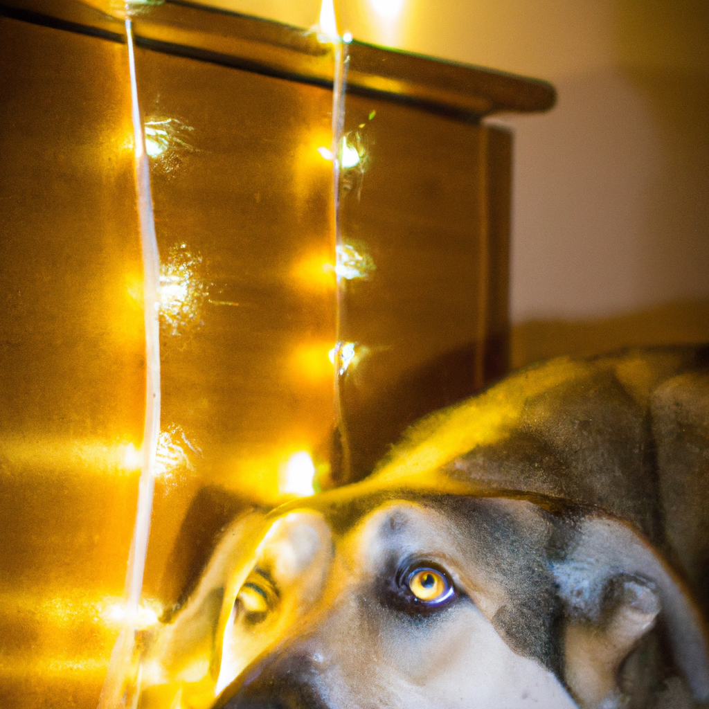

What Does Your Dog Do When You Aren't Home
Do you ever wonder what your dog does when you’re away? Do they get up to mischief, make a mess or do they just patiently wait for your return?
Your dog’s behavior when you’re away can depend on several factors, including their age, breed, and personality. Some dogs may suffer from separation anxiety, while others may be perfectly content to spend time alone.
If you have a younger dog, they may be more likely to get into trouble. Puppies are often full of boundless energy and can get into mischief if left alone for too long. Destructive behaviors like chewing furniture, digging, and barking can be signs of unrestrained energy and boredom.
For dogs of any age, it’s important to provide plenty of stimulating toys and activities for when you’re away. Stuffed Kongs, treat-dispensing toys, and chew toys can help keep your pup entertained and out of trouble.
Older dogs may be content to relax and take naps when you’re away. But if your dog seems bored or lonely, you can try leaving the radio or TV on in the background. This can provide some comfort and distraction.
If your pup suffers from separation anxiety, it’s important to consult with your vet or a dog behaviorist. They can help you and your pup find ways to cope with this difficult situation.
The next time you’re away from home, take comfort in knowing that with the right toys and activities, your pup will stay entertained and out of trouble!
Home